One With the Devil
Cinematographer
A 1 minute 52 second excerpt from the opening. I was the cinematographer. Director Drew Pollins.

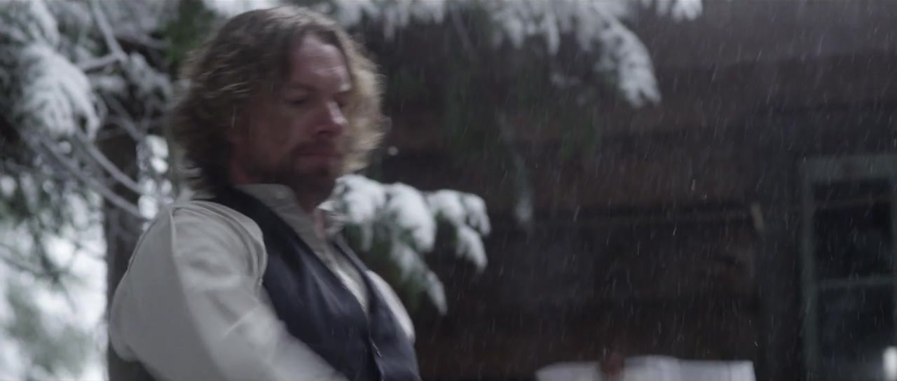
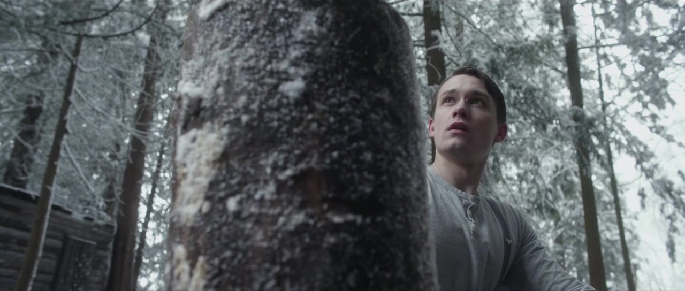
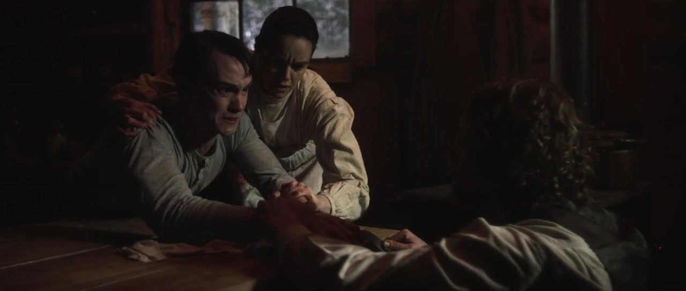
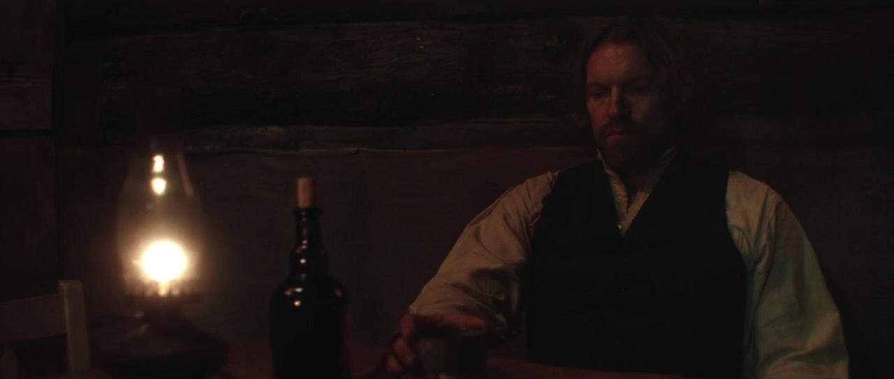
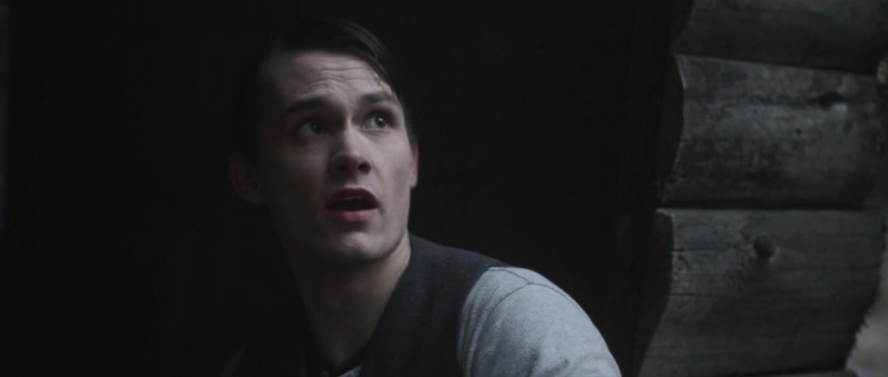
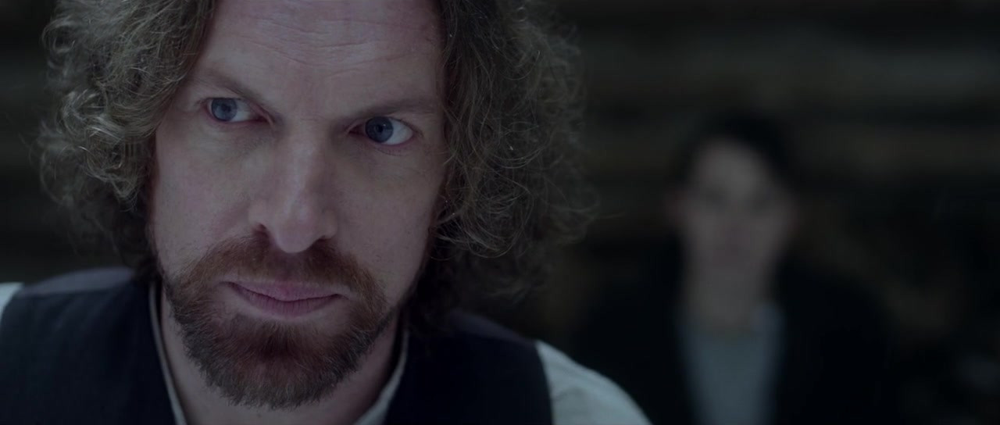
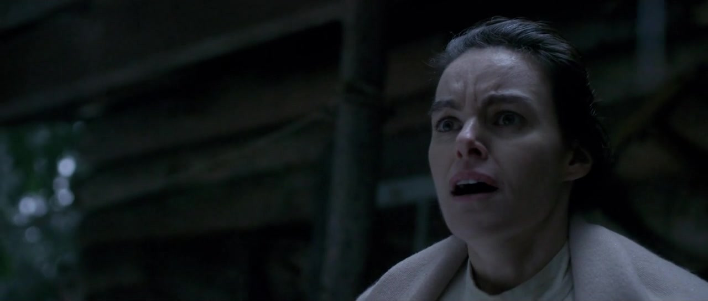
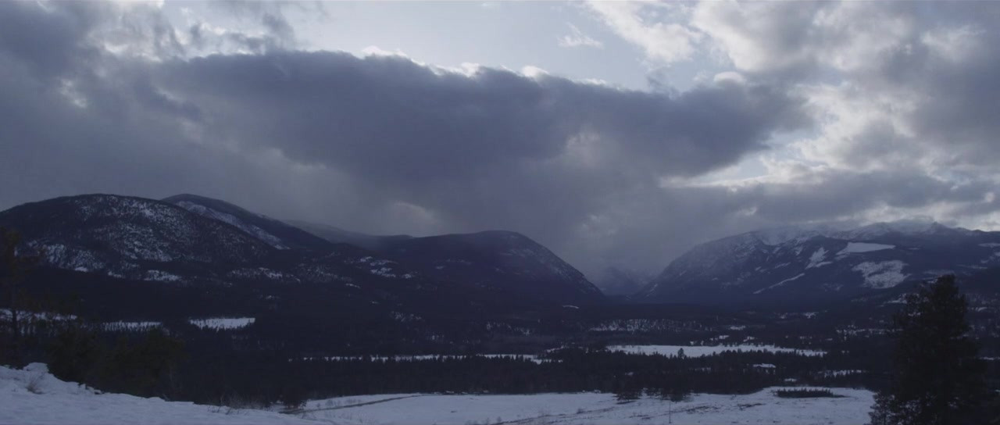
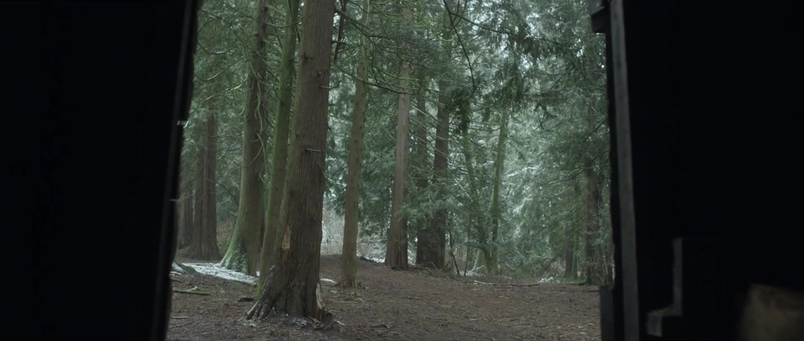
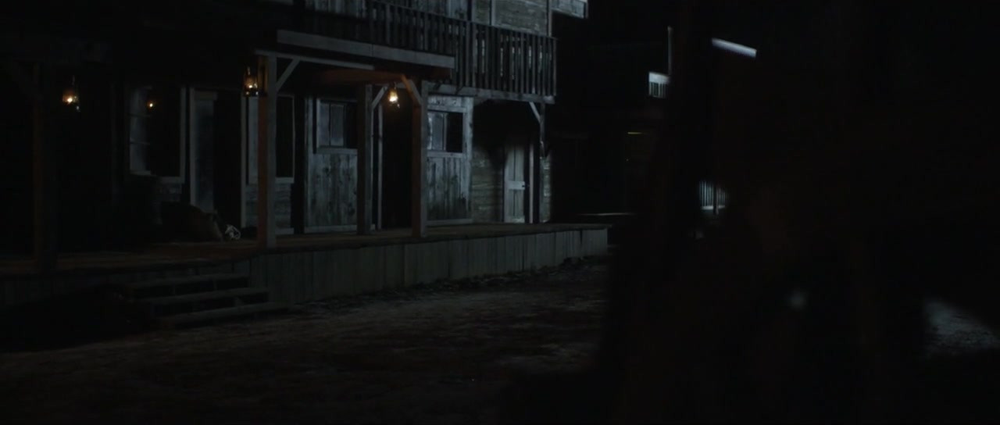
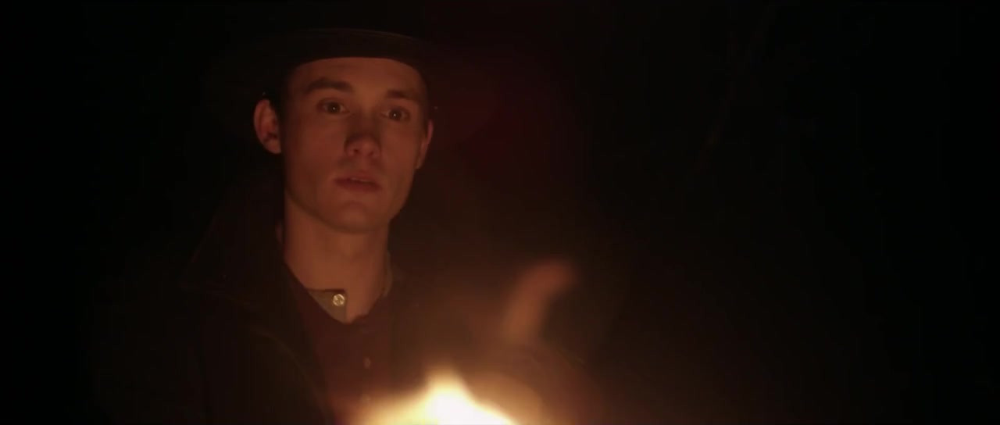
- credit
- dir. Drew Pollins
- credit
- Leo Award, Best Cinematography in a Short Drama (2015)
- credit
- CSC Student Cinematography Award (Panavision Canada) 2015